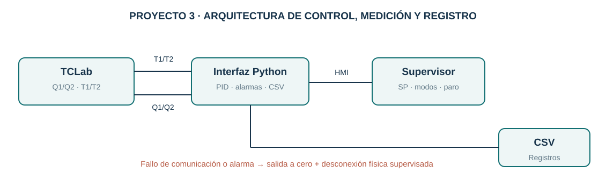

Semana 16 · Proyecto 3: control térmico con TCLab
Integrar y validar un sistema de control térmico con Python. Teoría, ecuaciones explicadas, ejercicios guiados y experimentación con Python/TCLab.
1. Proyecto 3 — definición y clases
Objetivo: diseñar, implementar y validar un sistema de control térmico de lazo cerrado usando TCLab, con una interfaz Python para supervisar la temperatura T1, aplicar Q1, introducir perturbaciones Q2, registrar datos y evaluar desempeño.
Integración del sistema
Modelo, identificación, controlador discreto, interfaz de usuario, procedimientos de ensayo, límites y respaldo CSV.Validación y reporte
Seguimiento, perturbaciones, métricas IAE/ISE/ITAE, discusión de límites físicos y presentación del proyecto.El proyecto se ejecuta en el PC con Python y una placa TCLab conectada por USB. No se debe describir como PID ejecutado en firmware sin implementar y probar esa variante.
Al finalizar: integrar lazo de control TCLab/Python, implementar paros seguros, llevar un protocolo experimental replicable, distinguir modelos y mediciones, y defender el desempeño con métricas y evidencia trazable.
2. Arquitectura del proyecto y especificaciones de ingeniería
El Proyecto 3 no consiste en «hacer que la gráfica llegue al setpoint»; consiste en identificar, justificar, implementar y evaluar un regulador reproducible. Se desarrollará primero en simulación y después con TCLab real, documentando sin ambigüedad la procedencia de cada dato.

| Requisito | Comprobación de aceptación |
|---|---|
| Adquisición | Registro temporal de T1, T2, SP, Q1, Q2 con unidades y fuente SIMULADO/REAL |
| Modos de control | Manual, ON/OFF, P, PI y PID con comportamiento explicable |
| Algoritmo | Documentación de Kc, Ti, Td, Tf, Ts; límites 0–100 % y anti-windup |
| Seguridad | Paro de emergencia físico; salida en cero al detener; protección por temperatura; supervisión |
| Experimentos | Pruebas repetibles de seguimiento y rechazo de perturbaciones; condiciones iniciales documentadas |
| Validación | IAE, ISE, ITAE, TV(u), sobreimpulso, establecimiento cuando aplique y discusión del modelo |
El algoritmo propuesto se ejecuta en una computadora con Python y actúa sobre TCLab a través de USB. El microcontrolador de la placa ejecuta su firmware de interfaz; esto no constituye un PID embebido en el microcontrolador. Para hablar de control verdaderamente embebido habría que portar la ley de control al firmware y validar sus temporizaciones.
2.1 Parámetros recomendados para el primer ensayo
Comience con un solo canal Q1→T1 y Q2=0. Puede proponer referencias escalonadas de 30, 35 y 40 °C, siempre que sean alcanzables dadas las condiciones ambientales y las características reales del TCLab. Los valores de Kc y Ti deben provenir de la identificación real de la Semana 14; los números de los simuladores son ilustrativos. Mantenga inicialmente una restricción conservadora de temperatura y verifique el límite seguro en la documentación del equipo.
3. Métricas para evaluar el desempeño y sus unidades
3.1 Error, seguimiento y rejilla de muestreo
Si el muestreo no es perfectamente uniforme, los criterios integrales deben aproximarse con el intervalo realmente medido Δtk, no con una constante nominal Ts. Para el seguimiento de consigna, se recomienda calcular indicadores sobre ventanas de prueba bien definidas y no mezclar fases de precalentamiento.
IAE mide error acumulado, ISE penaliza especialmente errores grandes y ITAE penaliza errores persistentes a tiempos tardíos. El origen del tiempo empleado para ITAE debe especificarse (normalmente el inicio de cada prueba).
3.2 Sobreimpulso, establecimiento y rechazo de perturbaciones
Para un cambio positivo de referencia con Δr=rf−r0>0, se calcula el sobreimpulso relativo al tamaño del escalón, y no a la temperatura absoluta inicial:
El tiempo de establecimiento con banda de 2 % se define como el primer instante a partir del cual todas las mediciones posteriores permanecen dentro de ±0.02|Δr| respecto a rf; para datos ruidosos, documente si utiliza filtrado o banda absoluta mínima. Si la respuesta nunca entra y permanece en la banda, el tiempo no se define. Para una perturbación con Q2, cuantifique desviación máxima y tiempo de recuperación, no el mismo sobreimpulso de consigna.
3.3 Esfuerzo de control, actividad y energía
Los porcentajes de Q1 no son vatios. La ecuación de energía requiere un modelo real de potencia eléctrica y no contabiliza automáticamente electrónica auxiliar ni variación de eficiencia. Si no se dispone de Pmax calibrado, informe solo el tiempo equivalente y TV(u).
3.4 Validación del modelo y comparación justa
Use iguales consignas, perturbaciones, duración, estado inicial y límites de potencia para los controladores comparados. Reporte separación entre simulación y medición, exactitud de tiempos, posibles fallas de la comunicación y dispersión entre repeticiones. Un controlador más rápido no es necesariamente mejor si genera oscilaciones o saturación prolongada.
4. Protocolo experimental reproducible
- Preparación: documente el equipo, versión de bibliotecas, cableado, alimentación y límites de operación. Compruebe lectura de T1/T2 con Q1=Q2=0; disponga de apagado físico.
- Modelo: ejecute el ensayo de identificación y ajuste Kp, τ, θ. Valide la predicción con al menos un ensayo distinto; anote RMSE.
- Simulación: elija PI por IMC con λ conservadora; utilice el simulador para ajustar Ts y límites. Después explore PID con derivada filtrada solo si se justifica.
- Control manual: compruebe que Q1 cambia dentro de 0–100 % y que la lectura T1 es plausible. No inicie control automático desde un estado no verificado.
- Seguimiento: aplique referencias térmicas alcanzables en escalones moderados, por ejemplo 30→35→40 °C. Registre condiciones iniciales y duración suficiente para observar establecimiento.
- Perturbación: active Q2 moderadamente para añadir calor; analice cuánto se desvía T1 y cuánto tarda en recuperarse el controlador.
- Paro: pruebe la función Detener y confirme Q1=Q2=0 mediante el mecanismo del equipo. Documente reacción a fallas simuladas antes de cualquier prueba de desconexión real.
- Análisis: separe fases experimentales; calcule IAE, ISE, ITAE, TV(u), error estacionario, sobreimpulso y tiempo de establecimiento cuando proceda.
- Comparación: repita el mismo protocolo con P, PI y, si procede, PID. Conserve CSV y capturas con ejes, unidades y leyenda.
- Informe: explique hipótesis, código, diagrama de control, metodología, incertidumbres, resultados y limitaciones; distinga siempre datos medidos de simulados.
4.1 Estados operativos y responsabilidades del controlador
| Estado | Operación permitida | Acción requerida |
|---|---|---|
| Desconectado | Revisión de parámetros, datos históricos | No permitir calentamiento; advertir si no se pudo apagar la placa |
| Conectado / detenido | Verificar T1/T2, seleccionar modo | Q1 y Q2 a 0 % |
| Adquiriendo | Cálculo de u, lectura y registro | Comprobar Ts, saturación, límites y calidad de datos |
| Alarma | Diagnóstico y cierre | Desactivar ambos calentadores, informar al operador |
5. Laboratorio interactivo previo
Este simulador le permite estudiar los efectos de cambiar la ganancia y el tiempo integral antes de ejecutar el programa de escritorio. No es una réplica exacta del TCLab físico.
Fuente: modelo docente FOPDT. Se añade perturbación térmica Q2 a los 400 s.
6. Rúbrica del Proyecto 3 y preguntas de defensa
El informe debe adoptar una estructura técnica: resumen, introducción, metodología (diseño, modelo, identificación, control y seguridad), resultados, discusión, conclusiones, bibliografía y anexos con código y datos CSV.
| Criterio de evaluación | Ponderación | Evidencia verificable |
|---|---|---|
| Modelado e identificación | 20 % | Balance energético, Kp, τ, θ, unidades, curva y RMSE con datos de validación |
| Fundamentación del controlador | 25 % | PI/PID deducido, muestreo, sintonización, saturación, filtro y anti-windup |
| Implementación y seguridad | 20 % | GUI funcional, modos, alarmas, paro, fallos de comunicación y código |
| Resultados y comparación | 25 % | Pruebas idénticas, gráficas, CSV, IAE/ISE/ITAE, TV(u) y discusión crítica |
| Informe y defensa técnica | 10 % | Redacción coherente, fotografías, unidades, fuentes y explicación oral |
Preguntas de defensa de la experiencia
- ¿Cuál es la diferencia entre la ganancia Kp de la planta y Kc del controlador? Indique sus unidades.
- ¿Cómo deriva el modelo de primer orden desde la conservación de energía y qué hipótesis lo hacen válido?
- ¿Por qué el controlador PI puede eliminar error permanente y el P no necesariamente?
- ¿En qué condición se bloquea la integral mediante anti-windup condicional?
- ¿Qué significa que una respuesta sea de datos simulados frente a datos medidos?
- ¿Qué prueba demostraría que el PID mejora al PI y qué datos podrían refutar esa conclusión?
- ¿Cuál es la limitación de usar el segundo calentador Q2 como perturbación?
- ¿Qué debe hacer el sistema ante una falla del sensor o de comunicación USB?
- ¿Por qué la energía estimada no puede obtenerse únicamente del porcentaje de Q1 sin Pmax?
- ¿Qué cambios serían necesarios para mover el PID de la computadora a un microcontrolador?
7. Materiales y recursos
Documento de estudio y procedimiento experimental con objetivos, ecuaciones, problemas resueltos y actividades propuestas.
Abrir guía PDFDescargar PDFEl control digital con TCLab estándar se ejecuta en Python por USB. La validación experimental y la compatibilidad real del equipo deben comprobarse presencialmente.
8. Evaluación formativa y tutor de IA
Responda las preguntas y después justifique cada selección con ecuaciones o evidencias experimentales.
1. ¿Qué parámetro describe la rapidez fundamental de una planta térmica de primer orden?
2. ¿Cuál es el efecto más directo del término integral?
3. ¿Qué representa el archivo CSV creado en modo simulación?
Actúe como tutor socrático de Ingeniería de Control para la Unidad III del curso INTERFAZ-IA, Semana 16. Ayúdeme a explicar la teoría matemática antes de contestar ejercicios; compruebe unidades y signos; exija justificar las ecuaciones, los modelos, el muestreo, el anti-windup y los resultados del TCLab. Pregunte una cosa por vez, sin inventar datos experimentales ni entregar directamente el resultado final.